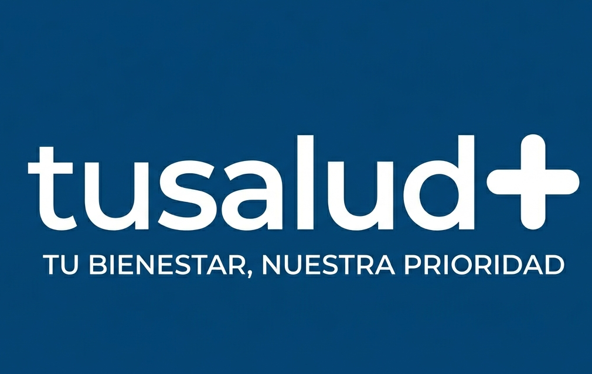

Nosotros
Somos una aplicación móvil colombiana, desarrollada en Manizales, para que ninguna familia tenga que cuidar la salud de un ser querido a punta de papelitos y llamadas.
¿Quiénes somos?
TuSalud+ es una aplicación móvil colombiana, desarrollada en Manizales, que ayuda a las familias a organizar los medicamentos y las citas médicas de un paciente.
El cuidador registra los tratamientos desde su cuenta; el paciente recibe los avisos a la hora exacta y los confirma con un solo toque, mientras el cuidador puede verificar el cumplimiento en tiempo real.

Misión
Brindar a pacientes y cuidadores una herramienta sencilla y confiable que organice los tratamientos médicos y las citas de salud, reduciendo el olvido, el estrés y la incertidumbre que implica cuidar a otra persona.
Visión
Ser en los próximos años la aplicación de referencia en Colombia para el acompañamiento de pacientes con tratamientos permanentes, reconocida por su confiabilidad, su facilidad de uso y su compromiso con la protección de los datos de salud.
Principios y valores corporativos
Confianza
Cuidamos la información de salud de cada familia como si fuera propia: no la vendemos ni la compartimos con terceros.
Cuidado
Diseñamos cada función pensando primero en el bienestar del paciente y en la tranquilidad de quien lo cuida.
Simplicidad
Creemos que una herramienta de salud debe ser fácil de usar a cualquier edad, sin pasos innecesarios ni letra pequeña.
Nuestras políticas
TuSalud+ cuenta con tres políticas que rigen la relación con sus usuarios, alineadas con el Contrato de Suscripción Premium B2C.
Términos y Condiciones de Uso
Qué está permitido y qué no al usar la aplicación en sus dos modalidades.
Leer →Tratamiento de Datos Personales
Cómo protegemos tu información de salud conforme a la Ley 1581 de 2012.
Leer →Devoluciones y Garantías
Tus derechos de retracto, garantía y cancelación en el Plan Premium.
Leer →Historia
TuSalud+ es un proyecto en desarrollo. Hoy estamos dando uno de nuestros primeros pasos: la prueba piloto con pacientes y cuidadores reales. Esta sección irá creciendo con cada hito del proyecto.